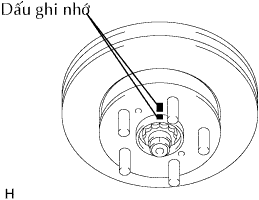
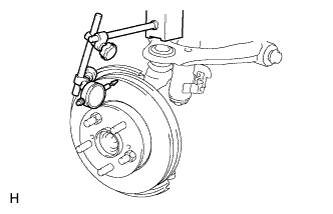
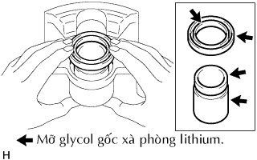
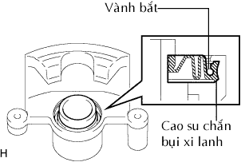
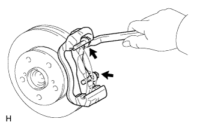
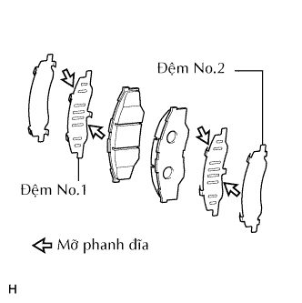

PHANH TRƯỚC > LẮP RÁP |
| 1. LẮP ĐĨA PHANH TRƯỚC |
|  |
Gióng thẳng các dấu ghi nhớ và lắp đĩa phanh.
| 2. KIỂM TRA ĐỘ ĐẢO ĐĨA PHANH |
|  |
Kiểm tra độ rơ hướng kính và kiểm tra độ đảo của moay ơ cầu xe. (Xem trang Kích chuột vào đây).
Lắp tạm đĩa phanh vào moayơ bằng các đai ốc.
Dùng một đồng hồ so, đo độ đảo đĩa phanh tại điểm cách mép ngoài của đĩa phanh 10.0 mm.
Tháo 2 đai ốc.
| 3. XIẾT CHẶT TẠM THỜI NÚT XẢ KHÍ PHANH ĐĨA PHÍA TRƯỚC |
Lắp nút xả khí vào xi lanh.
Lắp nắp.
| 4. LẮP CÚPPEN PÍTTÔNG |
Bôi mỡ Glycol gốc xà phòng Lithium lên cúppen mới.
Lắp chắn dầu vào xi lanh.
| 5. LẮP PÍTTÔNG PHANH ĐĨA PHÍA TRƯỚC |
|  |
Bôi mỡ Glycol gốc xà phòng Lithium lên píttông và cao su chắn bụi xi lanh mới.
Lắp cao su chắn bụi vào píttông.
Lắp píttông (với chắn bụi) vào xi lanh.
| 6. LẮP CAO SU CHẮN BỤI XI LANH |
|  |
Lắp cao su chắn bụi vào xi lanh.
Dùng một tô vít, lắp vòng hãm.
| 7. LẮP GIÁ BẮT XI LANH PHANH ĐĨA TRƯỚC TRÁI |
|  |
Lắp giá bắt xi lanh bằng 2 bu lông.
| 8. LẮP TẤM ĐỠ MÁ PHANH ĐĨA PHÍA TRƯỚC |
Lắp 4 tấm đỡ vào giá bắt.
| 9. LẮP BỘ ĐỆM CHỐNG ỒN MÁ PHANH TRƯỚC |
|  |
Bôi mỡ phanh đĩa lên cả hai mặt của các đệm No.1
Lắp đệm chống ồn No.1 và No.2 lên mỗi má phanh.
Lắp báo mòn má phanh ra vào từng má phanh.
| 10. LẮP MÁ PHANH ĐĨA PHÍA TRƯỚC |
Lắp 2 má phanh đĩa vào giá bắt.